Hardware <-> Computer Interface
Research
When i looked into how to interface the hardware I off course came across all the efforts of SailorSat on the various forums and lots of information on how to connect and setup Daytona Hardware to a computer. Luckily a lot of this work is compatible with the Virtua Racing hardware as well so I've been able to piggy back from that.
Firstly I spend time looking at the connections and connectors in the back of the control panel. I decided to work at this point rather than back to the filter board as seems to be the case for most updates.
This was to remain non destructive & also to allow me to work with just the control panel and not have to cart about the large metal cages (or remove the boards from them).
| 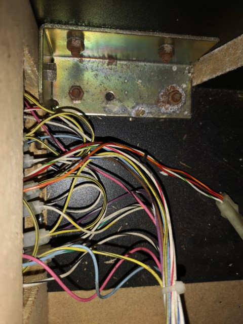 | 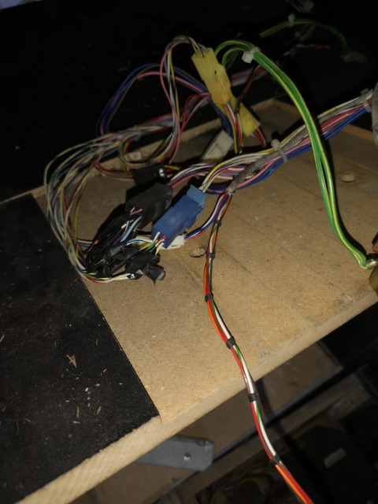 | 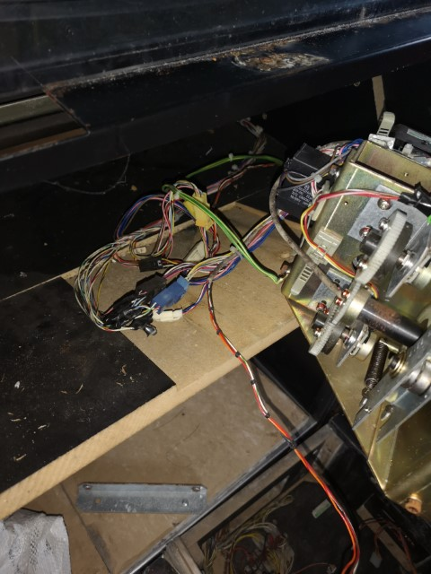 |
| 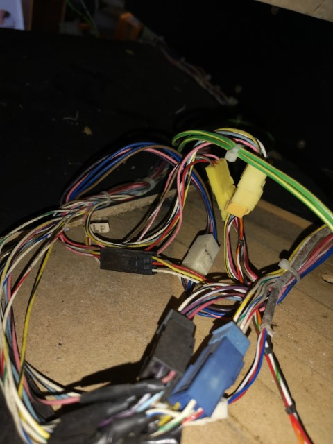 | 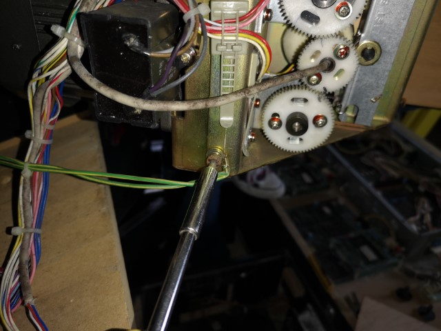 | 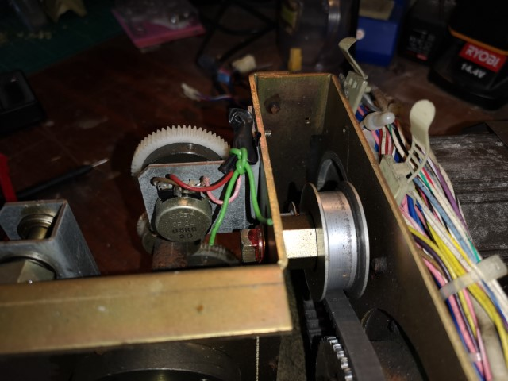 |
| 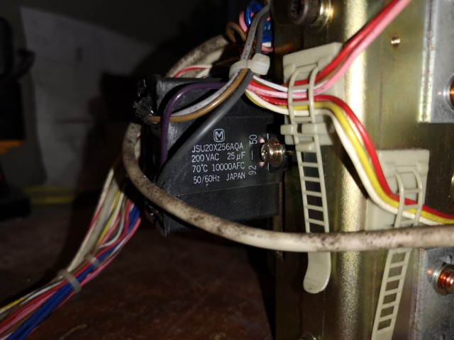 | 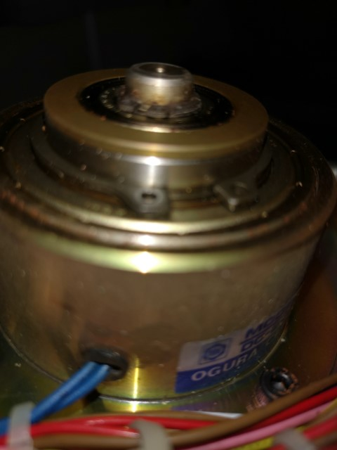 | 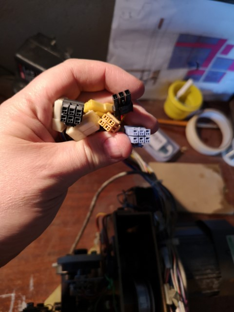 |
| 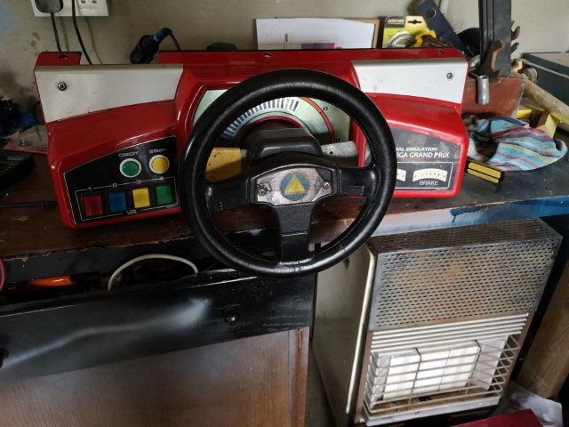 | 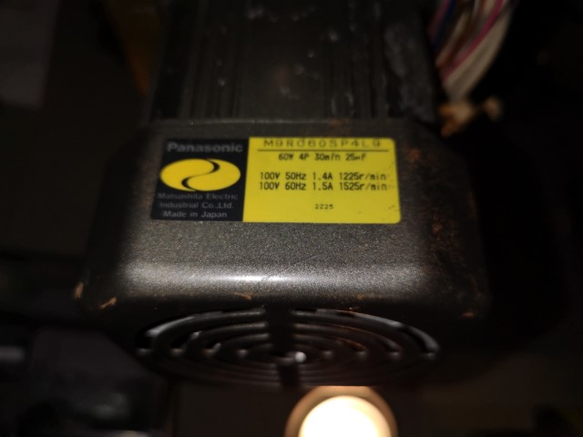 | 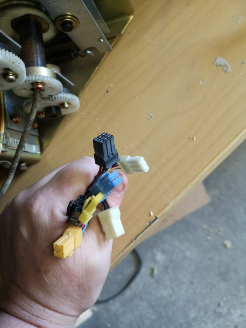 |
| 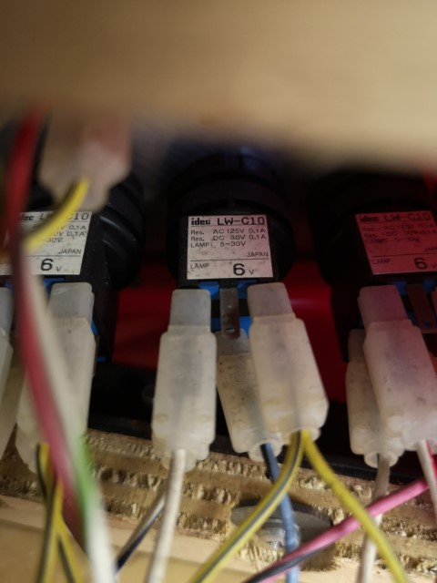 | ||
| 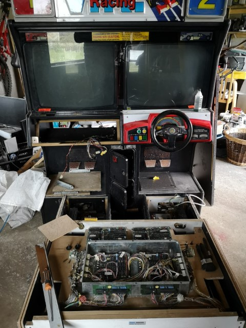 |
{kind=link}
{kind=link}
{kind=link}
{kind=link}
{kind=link}
{kind=link}
{kind=link}
{kind=link}
{kind=link}
{kind=link}
{kind=link}
{kind=link}
{kind=link}
{kind=link}
Daytona USB Project
I came across a couple of options for interfacing hardware. Some relied on cannabalising hardware but I found SailorSat's repos and Forum posts on how they were reading the data using Arduino & Teensey2 boards.
- Arcade Controls - Daytona USA - Converting a Twin cabinet "correctly"
- https://github.com/SailorSat/daytona-utils
This project is also the main reason I started to use DaytonaUSA as a test bed rather than Virtua Racing. It seemed easier to get the 2 players going together (Although there are also updates to virtua Racing on that side too)
Teensey2++
I decided to go with Teensey option rather than Arduino Mega, as I already had one and it seemed a lot simpler.
Building the bread board & Protoboard
Using Schematics & Photos on the Forum posts, I put together a simple prototypes initially. I setup LEDS, buttons and potentiaometers in place of the console to test initially.
{kind=link}
Once I was happy that the firmware worked and I could do some basic controls, I moved the setup to a protoboard for something a little more permanent.
{kind=link}
Testing Daughter boards
As part of this work, i also created 4 daughter boards to us in testing. - LED output - 4+ Controller Button - 3 Potentiometers (Steer, Accelerator+Brake) - Feedback Output Display
{kind=link}
{kind=link}
More Info TBD
Firmware
At this stage I'm still on a more or less stock firmware from SailorSat, but I do have to make some changes to better support the Virtua Racing Paddle shifting.
Printed Boards
To try and make things more stable i put some prprinted versions of the boards together. (TBD Still need to be tested)
{kind=link}
| 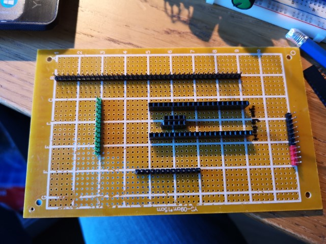 | 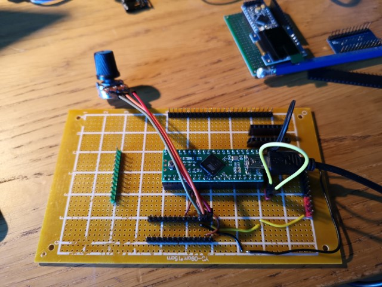 | |
| 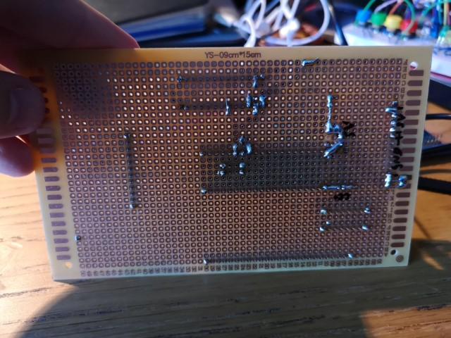 | 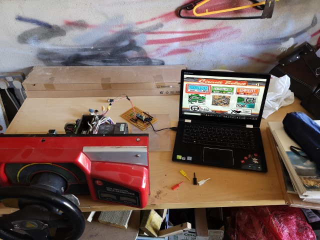 | 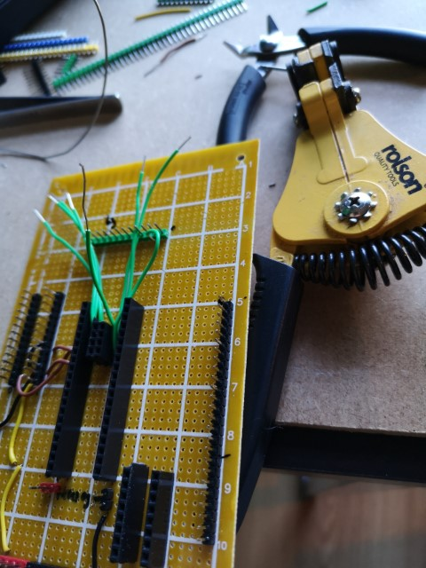 |
| 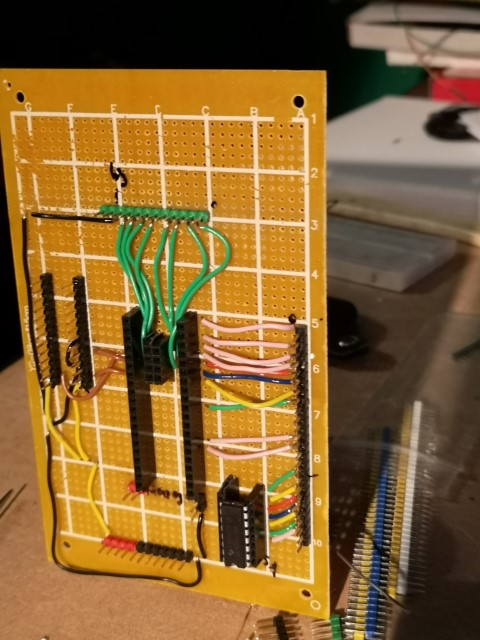 | 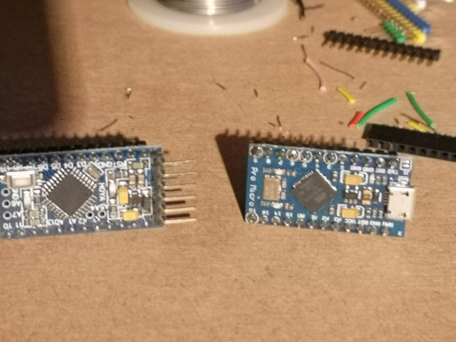 | |
| 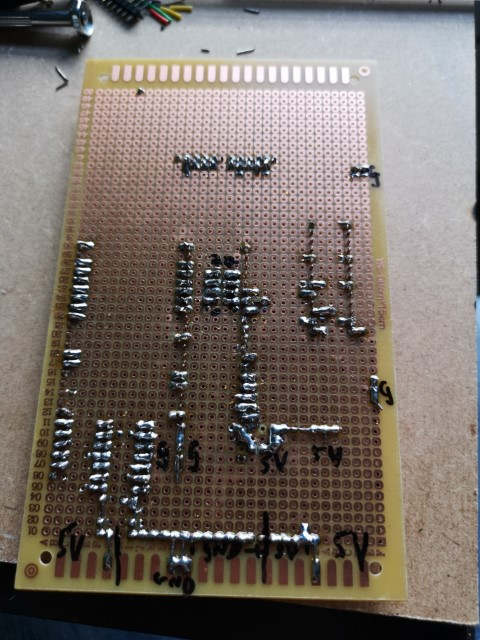 | 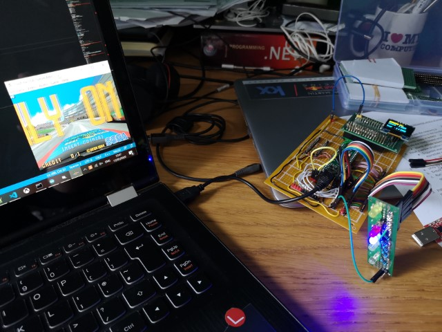 | |
| 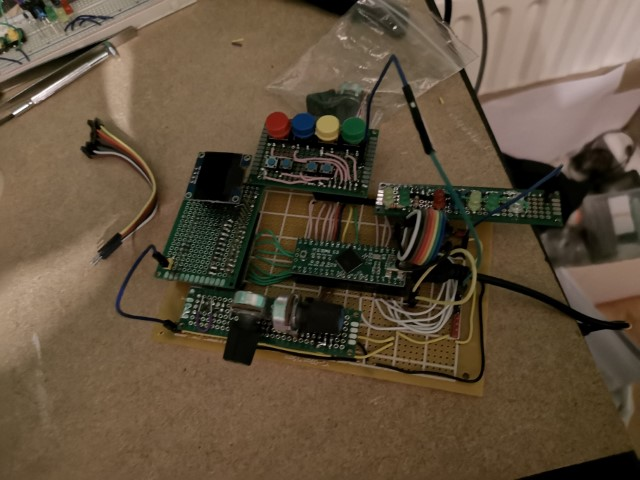 |
{kind=link}
{kind=link}
{kind=link}
{kind=link}
{kind=link}
{kind=link}
{kind=link}
{kind=link}
{kind=link}
{kind=link}
Connecting the Board to the Controller
AMP Connections
The connections used by the console are TE Connectivity, AMP Universal Power Connector
- https://akishop.jp/products/amp-connectors
- https://uk.rs-online.com/web/p/wire-housings-plugs/7194379
RS Components
- TE Connectivity AMP Universal Power Male Crimp Terminal Contact 22AWG 175149-1 (Stock no.:712-1993) Qty:100
- TE Connectivity AMP Universal Power Female Connector Housing, 3.96mm Pitch, 3 Way, 1 Row (Stock no.:712-2220) Qty:10
- TE Connectivity AMP Universal Power Female Connector Housing, 3.96mm Pitch, 4 Way, 2 Row (Stock no.:712-2223) Qty:10
- TE Connectivity AMP Universal Power Female Connector Housing, 3.96mm Pitch, 6 Way, 2 Row (Stock no.:719-4385) Qty:10
Also ordered these, but I think that was wrong
- Oops - TE Connectivity AMP Universal Power Female Crimp Terminal Contact 22AWG 175151-1 (Stock no.:712-1996 ) Qty:100
- oops - TE Connectivity AMP Universal Power Female Crimp Terminal Contact 16AWG 175152-1 (Stock no.:683-1336) Qty:50
I connected these cables to terminated connectors to plug into the headers directly on the prototype boards.
Cable Set
| Wiring | ||
|---|---|---|
| Pedals | ||
| Red | White | Black |
| Red | Green | Black |
| Gear Shift | ||
| Blue | Black | Red |
| Buttons | ||
| Red | Blue | Yellow |
| Green | Black | |
| Start Button Lamp | ||
| Yellow | White | Red |
| LeaderLamp | ||
| Green | White | Black |
| VR Lamp | ||
| Red | Blue | Yellow |
| Green | Black | |
| Steering | ||
| Black | Blue | Yellow |
Bill of Materials for Cables - 25cm cables - Red x6 - Black x7 - White x3 - Blue x4 - Green x4 - Yellow x4 - Female Jumper/dupont & Male Molex
I had a short cable built for the pedals, but then I used a 6 core Alarm/phone cable and added male/female dupont cables on each end to create and extension cable..
Connected Setup
Once the cables were built together they were placed into the upright consoles and on the shelf behind the console. This then feeds out a USB cable to run into the PC for the Software.
| 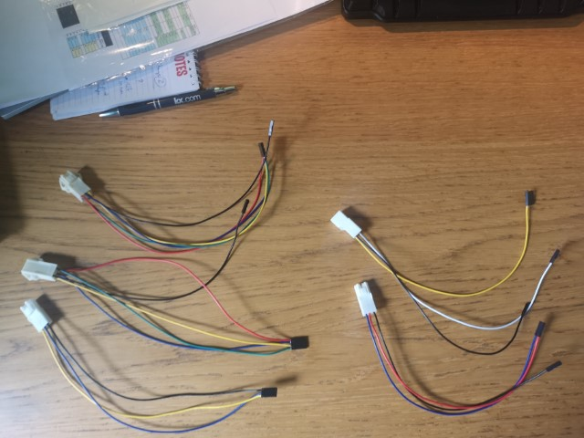 | 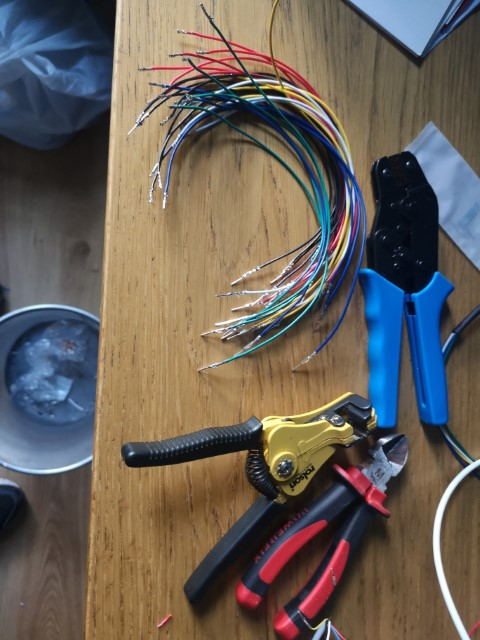 | 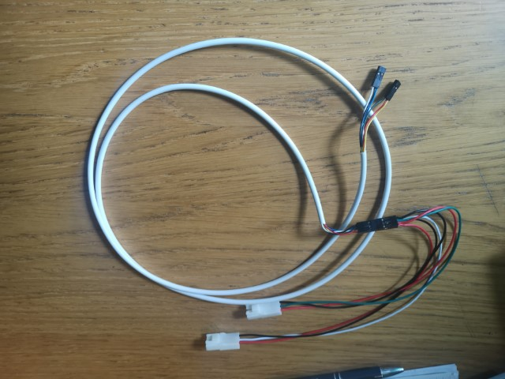 |
| 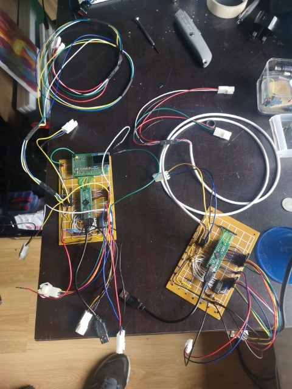 | 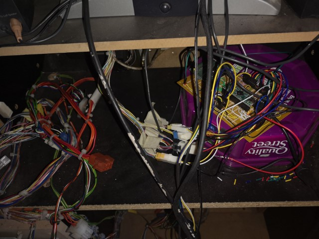 | |
| 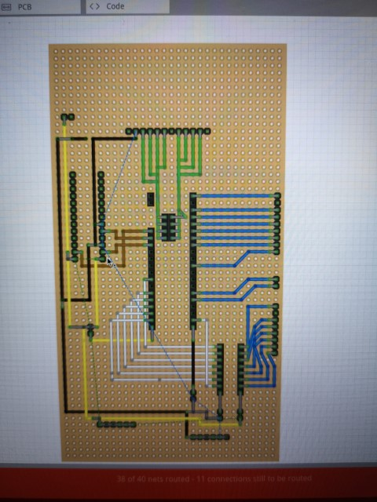 |
{kind=link}
{kind=link}
{kind=link}
{kind=link}
{kind=link}
{kind=link}
PC Setup
Software
As a base software it was setup with M2Emulator to run Daytona USA.
Connecting to M2Emulator
- https://emulation.gametechwiki.com/index.php/Model_2_Emulator